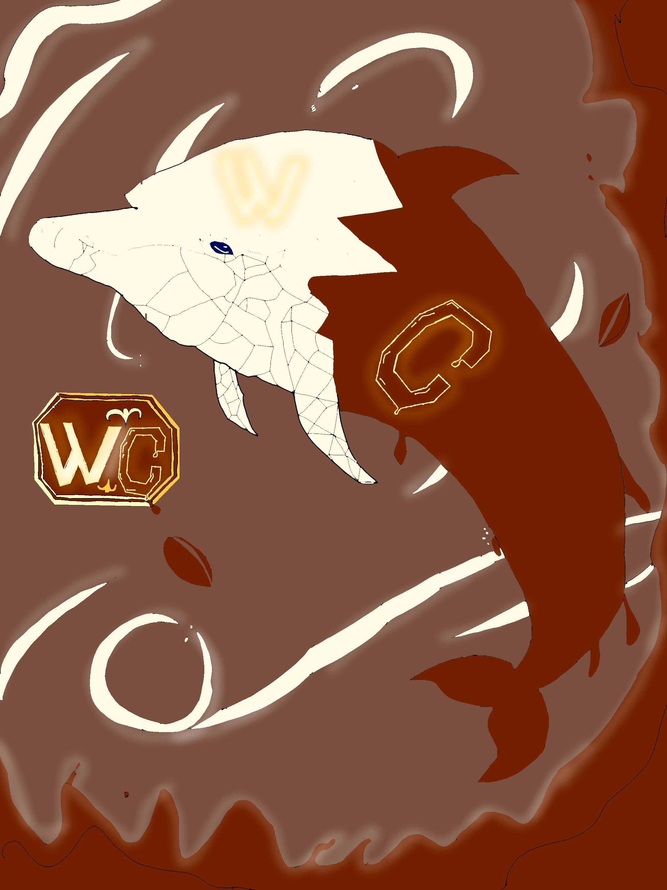
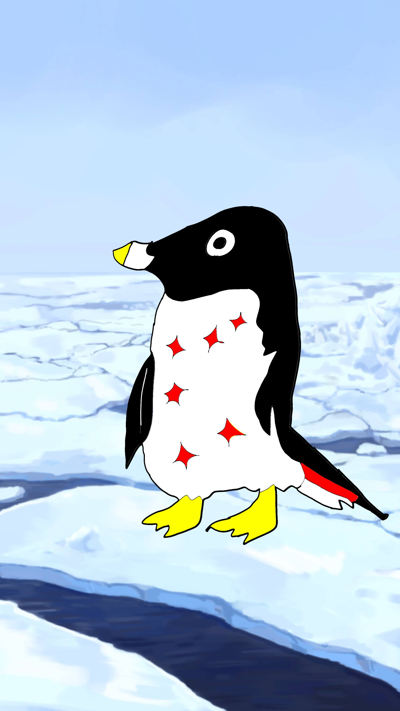

← CGポータルへ戻る
■ Sword Art Online：白空 明美
白空 明美
仮想世界での彼女の姿を記録しています。
■ Sword Art Online：ホワイトチョコレートドルフィン
ホワイトチョコレートドルフィン
仮想世界でのイルカを記録しています。
■ Sword Art Online：ホワイトチョコレートドルフィン
ホワイトチョコレートドルフィン
仮想世界でのイルカを記録しています。

言語ペンギン
仮想世界でのペンギンを記録しています。
